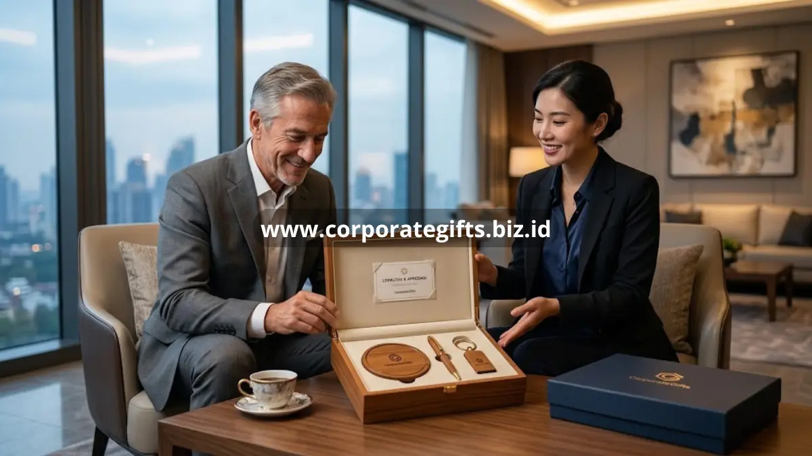

Poin Penting:
- Souvenir eksklusif perusahaan menciptakan paparan brand berulang melalui penggunaan sehari-hari.
- Kualitas souvenir turut membentuk persepsi klien terhadap standar kerja perusahaan secara keseluruhan.
- Data Promotional Products Association International mencatat lebih dari 80% penerima mengingat nama pemberi merchandise dalam satu tahun.
- Konsistensi desain antara souvenir dan identitas visual brand memperkuat pengenalan perusahaan.
- CorporateGifts membantu menyelaraskan souvenir eksklusif dengan identitas brand melalui personalisasi logo dan warna.
Souvenir eksklusif perusahaan berkontribusi pada branding dengan menjadi media fisik yang terus mengingatkan penerima pada identitas dan nilai perusahaan setiap kali digunakan. Berbeda dari iklan digital yang bersifat sementara, souvenir premium yang dipakai sehari-hari menciptakan paparan brand berulang secara alami. Efek ini pada akhirnya turut memperkuat loyalitas klien maupun mitra bisnis terhadap perusahaan pemberi.
Bagaimana Souvenir Eksklusif Perusahaan Berkontribusi pada Branding?
Souvenir eksklusif perusahaan berkontribusi pada branding melalui tiga mekanisme utama, yaitu paparan berulang, asosiasi kualitas, dan pengalaman emosional saat menerima hadiah. Ketiga mekanisme ini bekerja bersama membentuk persepsi positif terhadap perusahaan di benak klien maupun mitra bisnis.
Paparan Brand Berulang
Souvenir fungsional seperti tumbler atau alat tulis yang digunakan setiap hari menciptakan paparan logo perusahaan secara konsisten tanpa terasa memaksa, berbeda dari iklan konvensional yang sering diabaikan audiens.
Asosiasi Kualitas Produk dengan Reputasi Perusahaan
Kualitas material dan finishing souvenir secara tidak langsung mencerminkan standar kerja perusahaan di mata penerima. Souvenir yang terasa murah dapat menimbulkan persepsi kurang profesional, sementara souvenir premium memperkuat citra perusahaan yang detail dan berkualitas.
Pengalaman Emosional saat Menerima Hadiah
Momen membuka kemasan souvenir eksklusif menciptakan pengalaman positif yang melekat pada ingatan penerima. Pengalaman ini turut membentuk hubungan emosional antara penerima dan brand perusahaan, bukan sekadar transaksi bisnis semata.
Apakah Souvenir Eksklusif Perusahaan Dapat Meningkatkan Loyalitas Klien?
Souvenir eksklusif perusahaan dapat meningkatkan loyalitas klien karena memberikan sinyal apresiasi personal di luar konteks transaksi bisnis rutin. Klien yang merasa dihargai secara personal cenderung memiliki keterikatan emosional lebih kuat terhadap perusahaan, yang pada akhirnya berdampak pada keberlanjutan kerja sama jangka panjang.
Survei Corporate Gift Study 2023 mencatat mayoritas profesional merasa lebih dihargai oleh perusahaan yang memberikan hadiah personal dibanding pendekatan transaksional biasa. Temuan ini menegaskan bahwa souvenir eksklusif bukan sekadar formalitas, melainkan bagian dari strategi menjaga hubungan bisnis yang lebih humanis.

Cara Menyelaraskan Souvenir dengan Identitas Brand Perusahaan
Penyelarasan souvenir dengan identitas brand dapat dilakukan melalui konsistensi warna, tipografi logo, dan gaya desain kemasan agar sejalan dengan panduan visual perusahaan. Souvenir yang selaras dengan identitas brand akan terasa seperti perpanjangan alami dari perusahaan, bukan barang generik yang hanya ditempeli logo.
Selain aspek visual, pemilihan jenis souvenir juga sebaiknya mencerminkan nilai perusahaan. Misalnya, perusahaan yang mengusung nilai keberlanjutan dapat memilih souvenir berbahan ramah lingkungan seperti kayu atau bambu untuk memperkuat narasi brand secara konsisten.
Dampak Jangka Panjang Souvenir Eksklusif terhadap Reputasi Perusahaan
Investasi pada souvenir eksklusif perusahaan memberikan dampak reputasi yang bertahan lebih lama dibanding metode promosi jangka pendek. Barang berkualitas tinggi yang terus digunakan penerima secara tidak langsung menjadi duta brand yang bekerja secara pasif dalam jangka panjang, tanpa memerlukan biaya tambahan setelah pemberian awal.
Dampak ini semakin terasa ketika souvenir diberikan secara konsisten pada momen-momen penting, sehingga membentuk pola asosiasi positif yang berulang antara perusahaan dan penerimanya dari waktu ke waktu.
Mengukur Efektivitas Souvenir sebagai Media Branding
Efektivitas souvenir eksklusif perusahaan sebagai media branding dapat diamati dari beberapa indikator sederhana, seperti seberapa sering souvenir tersebut terlihat digunakan penerima di lingkungan kerja atau acara publik, serta respons positif yang muncul saat momen pemberian berlangsung. Meski sulit diukur secara numerik seperti kampanye digital, indikator kualitatif ini tetap memberi gambaran nyata mengenai sejauh mana souvenir berhasil melekat dalam ingatan penerima.
Perusahaan yang konsisten memberikan souvenir eksklusif berkualitas pada momen-momen penting cenderung membangun pola asosiasi positif yang terakumulasi dari waktu ke waktu, berbeda dengan pemberian souvenir yang bersifat sporadis tanpa perencanaan jangka panjang.
Souvenir eksklusif perusahaan berperan sebagai strategi branding yang bekerja melalui paparan berulang, asosiasi kualitas, dan pengalaman emosional penerima. Penyelarasan desain dengan identitas brand serta pemilihan jenis souvenir yang relevan dengan nilai perusahaan akan memperkuat dampak branding secara maksimal.
CorporateGifts siap membantu Anda merancang souvenir eksklusif perusahaan yang selaras dengan identitas brand sekaligus memperkuat loyalitas klien. Hubungi tim CorporateGifts untuk konsultasi strategi souvenir korporat Anda.
FAQ
1. Bagaimana souvenir eksklusif perusahaan berkontribusi pada branding?
Souvenir eksklusif berkontribusi melalui paparan berulang dari penggunaan sehari-hari, asosiasi kualitas produk dengan reputasi, dan pengalaman emosional positif saat menerima hadiah.
2. Apakah souvenir eksklusif dapat meningkatkan loyalitas klien?
Ya, karena memberikan sinyal apresiasi personal yang membuat klien merasa dihargai, sehingga memperkuat keterikatan emosional untuk kerja sama jangka panjang.
3. Mengapa kualitas souvenir memengaruhi reputasi perusahaan?
Kualitas material dan finishing souvenir mencerminkan standar kerja perusahaan. Souvenir premium memperkuat citra profesional, sedangkan souvenir murah bisa menimbulkan persepsi kurang baik.
4. Bagaimana cara menyelaraskan souvenir dengan identitas brand?
Penyelarasan dapat dilakukan melalui konsistensi warna, tipografi logo, gaya desain kemasan, serta pemilihan jenis souvenir yang mencerminkan nilai-nilai perusahaan.
5. Apa dampak jangka panjang dari pemberian souvenir eksklusif?
Barang berkualitas yang terus digunakan akan menjadi duta brand pasif jangka panjang, membentuk pola asosiasi positif tanpa memerlukan biaya tambahan setelah pemberian awal.
Butuh rekomendasi cepat untuk corporate gift?
Chat tim Pusat Souvenir & Merchandise Kantor untuk kurasi pilihan sesuai budget & kebutuhan brand Anda.